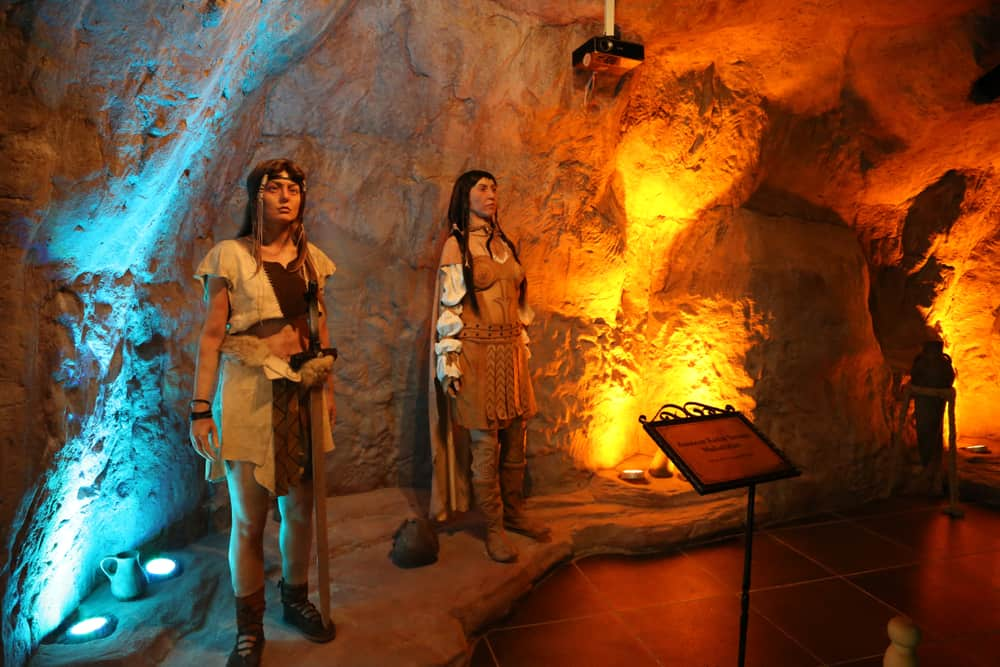

Samsun, Türkiye'nin Karadeniz Bölgesi'nde yer alan tarihi ve kültürel zenginlikleriyle ön plana çıkan bir şehirdir. Tarih boyunca birçok medeniyete ev sahipliği yapmış olan Samsun, kendine özgü bir atmosferi ve büyüleyici güzellikleriyle ziyaretçilerini cezbeder. Samsun, Karadeniz'in kıyısında yer aldığı için sahip olduğu doğal güzellikleriyle ünlüdür. Şehri çevreleyen muhteşem kumsalları, temiz denizi ve serin Karadeniz havasıyla ziyaretçilerine eşsiz bir deneyim sunar. Samsun'un en ünlü plajlarından biri olan Atakum Plajı, uzun sahil şeridi ve keyifli atmosferiyle hem yerli hem de yabancı turistlerin uğrak noktasıdır. Ancak Samsun sadece doğal güzellikleriyle değil, aynı zamanda tarihi ve kültürel mirasıyla da ön plana çıkar. Şehirde bulunan tarihi yapılar, geçmişten günümüze uzanan bir yolculuğa davet eder. Samsun'un sembol yapılarından biri olan Bandırma Vapuru, Türkiye'nin bağımsızlık mücadelesinde önemli bir rol oynamış olan Mustafa Kemal Atatürk'ün Samsun'a çıkışını simgeler. Aynı zamanda şehirde bulunan Atatürk Evi ve Müzesi, Atatürk'ün Samsun'da kaldığı süreci ve milli mücadeleye başlangıcını ziyaretçilerle paylaşır. Samsun, kültürel etkinlikleri ve festivalleriyle de canlı bir şehirdir. Her yıl düzenlenen Samsun Uluslararası Atatürk Kültür ve Sanat Festivali, müzik, dans, sergi ve tiyatro gibi etkinliklere ev sahipliği yaparak ziyaretçilere unutulmaz anlar yaşatır. Ayrıca Samsun'a özgü halk oyunları ve folklör gösterileri, şehrin zengin kültürel dokusunu yansıtır. Samsun, lezzetli mutfağıyla da tanınır. Karadeniz'in taze ve doğal ürünlerinden elde edilen yemekler, şehrin gastronomi turizmi açısından da önemli bir noktasını oluşturur. Hamsi, karalahana, mısır ekmeği gibi yöresel lezzetler, Samsun mutfağının vazgeçilmezlerindendir. Sonuç olarak, Samsun doğal güzellikleri, tarihi ve kültürel zenginlikleri, festivalleri ve lezzetli mutfağıyla keşfedilmeyi bekleyen bir şehirdir. Hem yerli hem de yabancı ziyaretçiler için cazip bir turistik destinasyon olan Samsun, Karadeniz'in büyüleyici atmosferini ve misafirperverliğini en iyi şekilde sunar.

Samsun
2023 Verilerine Göre Samsunun Tahmini Nüfusu 1.374.570

Müzeler
Gazi,Arkeoloji ve Etnografya,Kent Müzesi ve Bandırma Vapuru gezilebilecek yerler arasında

Tarihi ve Doğal Güzellikler
Türkiyedeki 420 kuşdan Nesli Tükenmekte Olan Kuş Türleri Dahil 321 Farklı Kuş Türünü Bir Arada Bafra Kızılırmak Deltası Kuş Cenneti’nde Görebiliriz.

Amazon Köyü
Batı Park'ta Kurulan Bu Bu Köy Samsunda Yaşadığı Düşünülen Kadın Savaşçıların Temsilini İçeriyor